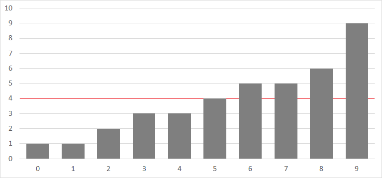

競技プログラミング講習/二分探索
概要
今回は、二分探索について解説します。今まではどのように探索するかを解説してきましたが、今回は探索を高速化する方法です。計算量を見積もってみて、愚直にやると間に合わないが、二分探索を使うと計算量が削減できて間に合う場合があります。
重要語
二分探索
（広義）単調増加の配列の中からある特定の値を探索する
logaN
Nがaの何乗かを表す
必要語
今回の必要語はありません。
二分探索
二分探索は、「要素数Nの配列Aの中に、K以下の数は何個あるか」といった問題の時に役立ちます。具体的には、Q個のクエリが投げられて、各クエリは、「Ki以下の数は、配列Aの中に何個あるか」というもので、制約は以下の通りです。
- 1 ≤ N, Q ≤ 2×105
- 0 ≤ K ≤ 109
- 0 ≤ Ai ≤ 109
- i ≠ jのときAi ≠ Aj
- 入力はすべて整数
愚直にやってみる
まずは素直に、N個すべての要素をチェックして求めてみましょう。この時の計算量はO(QN)です。しかし、制約を見ると、N及びQが最大で2×105となるため、これではTLEです。 そこで活躍するのが、二分探索です。ここから、二分探索のやり方を見ていきましょう。
愚直解
#include <bits/stdc++.h>
using namespace std;
int main() {
int n, q;
cin >> n >> q;
vector<int> a(n);
for (int i = 0; i < n; i++) {
cin >> a[i];
}
// ここでQ回
for (int i = 0; i < q; i++) {
int k;
cin >> k;
int ans = 0;
// ここでN回
for (int j = 0; j < n; j++) {
if (a[j] <= k) {
ans++;
}
}
cout << ans << endl;
}
return 0;
}
ソート
ここで、例として下図のような配列Aを考えてみます。

ここで突然ですが、Aを昇順（小さい順）にソートします。ソートすることによって答えが変わることはありませんので、この操作は問題ありません。

言い換えを考える
では、ソートされたこの状態で、K以下の数がいくつあるかが知りたいわけですが、例えばKが2のときを考えてましょう。 2以下の数というのは、図の青い矢印の部分です。また、5の時も考えてみると、図の赤い矢印の部分です。 ここで、ソートした重要性が見えてきたでしょうか。K以下の数は必ず、0から「ぎりぎりKを超えないところ」までにあるのです。 では、この「ぎりぎりKを超えないところ」はどのように見つければよいでしょうか。

具体的に考える
Kが5の時を考えてみます。この時、Aをグラフにすると以下のようになります。

右端と左端を近づける
左端をl右端をrとして、これを徐々に近づけていくことにします。 まず、lとrの中間すなわち(l+r)/2の部分を見ます。そして、ここが条件を満たしているかどうかを判定します。 まず、lの初期値は必ず条件を満たしていないように、rの初期値は必ず条件を満たすようにする必要があります。
under preparation
練習問題
理解できたか確認するために、練習問題があります。以下の問題を解いてみてください。
under preparation